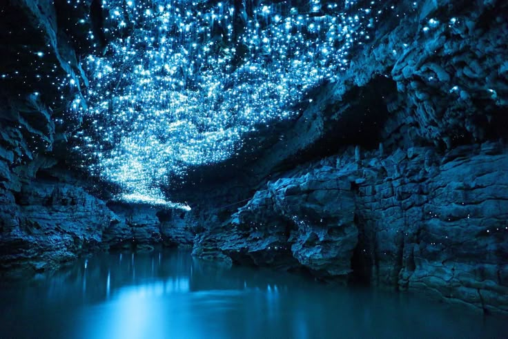

>
>
>
>
Пещеры Вайтомо
Пещеры Вайтомо — необычное природное чудо Новой Зеландии.
- Расположение: Находятся на Северном острове, вблизи городка Вайтомо, примерно в 12 км от города Вангани.
- Магия света: Пещеры известны своими светлячками, которые создают завораживающие синие огоньки, освещая тёмные тоннели.
- Разнообразие: Комплекс включает несколько пещер, среди которых наиболее популярные — "Глиттеринг Каверн" и "Туманная пещера".
- Размеры: Общая протяжённость пещер составляет около 30 км, с огромными подземными залами и тонелями.
- Геология: Формировались миллионы лет назад благодаря процессам эрозии и карстового растворения.
- Экскурсии: Можно совершать поездки на лодках по подземным рекам, наслаждаясь красотой пещер и их обитателей.
- История: Место привлекает туристов с 1887 года, когда туда впервые организовали экскурсии.
Пещеры Вайтомо — незабываемое место для любителей природы и приключений!